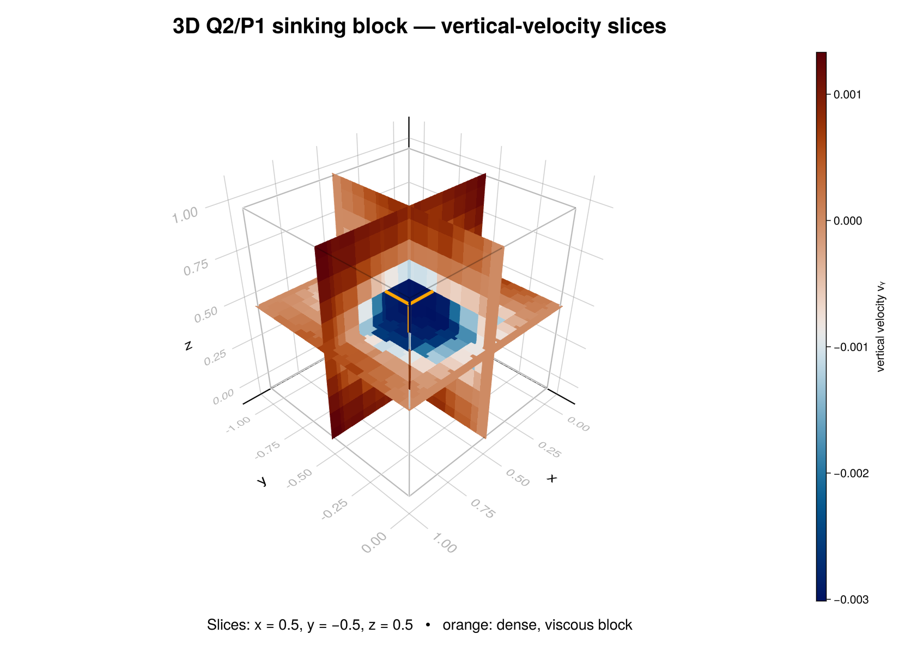

Three-dimensional sinking block
A dense, stiff cube embedded in a lighter, weaker matrix descends under gravity. The example is the compact end-to-end exercise of the package's 3-D Stokes path: Gmsh mesh generation, the Hex27 Q2/P1-disc element pair, the matrix-free DYREL solver, and the discrete adjoint that differentiates the result with respect to material properties.
julia --project=examples examples/stokes/sinking_block/sinking_block_3D.jl
julia --project=examples examples/stokes/sinking_block/sinking_block_3D_adj.jlGeometry and mesh
The domain is the unit cube $[0,1]^3$, with $z$ the vertical axis and gravity acting along $-z$. Gmsh meshes the horizontal $x$-$y$ plane with recombined quadrilaterals, extrudes that surface upward through nz layers, and raises the resulting hexahedra to second order. A fixed permutation converts Gmsh's type-12 node ordering to the QuadraticElement{3,27} ordering used by FEMTools; the example rejects mixed volume-element output rather than silently meshing something else.
The block is the set of cells whose centroid lies within half_width of $(0.5,0.5,0.5)$ in every coordinate direction. Cells take a phase whole, so the block is a staircase approximation of the cube whose fidelity depends on mesh_size and nz. Phase 1 is the matrix and phase 2 the block; both index into the η and ρ tuples. The example errors out if no cell resolves the block at all.
| Parameter | Default | Meaning |
|---|---|---|
mesh_size | 0.2 | horizontal target edge length |
nz | 5 | number of extrusion layers |
half_width | 0.15 | block half-width in every direction |
η | (1.0, 100.0) | matrix and block viscosity |
ρ | (1.0, 2.0) | matrix and block density |
g | (0.0, 0.0, -1.0) | gravity vector |
solver_tol | 1e-6 | absolute combined residual tolerance |
The default problem contains 225 Hex27 cells and 2,255 velocity nodes.
Discretization
Velocity uses continuous Q2 functions with 27 nodes per cell. Pressure is not carried by the element: it lives in a separate $4 \times n_{els}$ array holding the four discontinuous P1 modes
\[(1,\xi,\eta,\zeta),\]
so every cell owns four pressure unknowns and the discrete problem has $3 n_{nodes}$ velocity and $4 n_{els}$ pressure degrees of freedom. Only the first, cell-constant mode has a single cell-centre value, which is what the VTK output records.
Boundary conditions
Free slip on all six walls: each wall pins only the velocity component normal to it, leaving tangential flow along the wall unconstrained. The constraint is passed as a 3-tuple fixed_nodes, where entry c lists the nodes whose component c is held at zero, so a node on an edge or corner appears once per wall it touches. Wall membership is tested against a tolerance rather than exact equality, because extruded coordinates land on a wall only to rounding.
Forward solve
The forward problem calls solve_stokes_dyrel!, the same public entry point the 2-D example uses; multiple dispatch selects the 3-D layout of three velocity components plus cell-local pressure modes. Velocity and pressure are caller-owned and updated in place from the supplied initial guess.
ncheck sets how often the residual norms are recomputed and reported, ϵ_tol the absolute combined tolerance, and total_iterMax the iteration budget the 3-D method enforces. velocity_step and γP scale the velocity and pressure updates. The returned statistics carry iter, err, err_v, err_P, converged, and reached_total_iter; the example raises an error rather than returning a silently unconverged field. solve_stokes_3d! remains as a compatibility wrapper mapping maxiter, tolerance, and pressure_step onto those keywords.
run_sinking_block_3d returns the mesh, velocity and pressure, cell phases, constrained nodes, solver statistics, and the material inputs. With write_output=true it also writes stokes_3D_sinking_block.vtk holding the three velocity components, cell-centre pressure, and material phase.

The blue region around the block has negative vertical velocity, while the wall-normal velocity is exactly zero on every boundary face. For this figure, the unstructured nodal field is sampled to a regular $51^3$ visualization grid and sliced through the block centre.
Discrete adjoint
For the linear system and scalar objective
\[A(m)u=b(m), \qquad J=c^T u,\]
the sensitivity to a material parameter $m$ follows from one transpose solve
\[A^T\lambda=c, \qquad \frac{\mathrm dJ}{\mathrm dm} =\lambda^T\left(\frac{\partial b}{\partial m} -\frac{\partial A}{\partial m}u\right),\]
which delivers the gradient with respect to every parameter at once, instead of one forward solve per parameter as finite differences require.
The objective here is $J=\mathrm{mean}(v_z)$ over the velocity nodes belonging to the dense block — its sinking rate. The load $c=\partial J/\partial v$ therefore carries $1/N$ on the vertical component at those nodes and zero everywhere else.
The linear viscous operator is symmetric, so $A^T=A$ and solve_stokes_adjoint_dyrel! reuses the forward residual and preconditioner with $c$ as its momentum load. The constrained nodes carry over unchanged for the same reason. solve_stokes_adjoint_3d! is the matching compatibility wrapper.
stokes_material_gradient_3d then contracts $\lambda$ against $\partial b/\partial\rho$ and $(\partial A/\partial\eta)u$ for one phase, phase 2 by default. Density changes the gravity load; viscosity changes that phase's viscous matrix contribution. Both derivatives are applied as residual evaluations with unit material properties, so neither derivative matrix is ever assembled — the adjoint example builds no system matrix at any point.
Verification
test/test_stokes_3d_reference.jl assembles the sparse Q2/P1-disc saddle-point system independently, as an exact oracle for the matrix-free path. It checks that the matrix-free residual reproduces $Au-b$, that the iterative adjoint matches $A^{-T}c$ computed by a direct solve, and that both material gradients agree with centred finite differences taken on the sparse system.